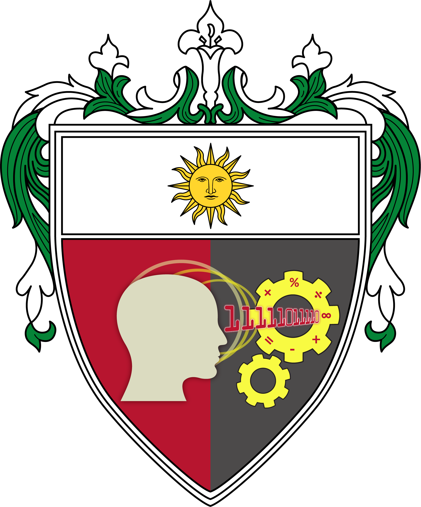

UNIVERSITY OF SANTO TOMAS
ACADEMIC PROGRAMS
Explore undergraduate degree programs recognized for academic excellence and industry relevance
designed to prepare students for the rapidly evolving computing landscape
UNDERGRADUATE DEGREES
CICS offers three distinct four year programs, each built on academic rigor, hands-on learning, and the values of
the University of Santo Tomas
AT A GLANCE
| PROGRAM | ABBREVIATION | DURATION | GENERAL FOCUS |
|---|---|---|---|
| Computer Science | BSCS | 4 Years | Computing, algorithms, software and computer science |
| Information Systems | BSIS | 4 Years | Technology and business information systems |
| Information Technology | BSIT | 4 Years | Application and management of information technology |
ACADEMIC UNITS
EXCELLENCE
Discover admission requirements and take the next step toward a future in computing.